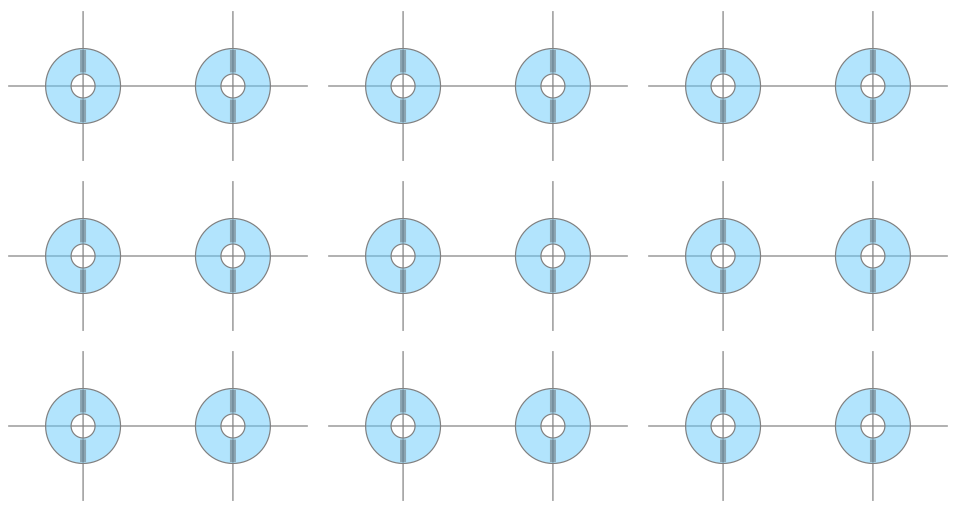

Recording HVT
Description:
This element suggests a concept for recording details of alignment/cover test results. The element would be repeated in a grid for each of the nine positions of gaze. The idea is not only to speed up data entry, but also to provide a visual overview of the problem.
Click on either 'eye' to move it into a horizontal and/or vertical misalignment. Dragging the yellow handle will enable addition of cyclotropias. Data may also be entered directly into the drop down menus, after which the diagram will update automatically.
Status: Alpha
Edit mode:
View mode:
Steering Group:
Strabismus